Time-Incremental Continued Pretraining of LLMs: Knowledge Updates Without Catastrophic Forgetting
Abstract
Large language models (LLMs) drift out of date the moment their pretraining ends, yet retraining from scratch is prohibitively expensive. Continued pretraining (CPT) is the natural remedy, but it is typically evaluated through a continual learning lens that assumes disjoint data streams. This is a poor fit for time-incremental updates on web-scale crawls, where successive snapshots share substantial URL overlap by design. We study time-incremental CPT in this realistic regime: continued pretraining on FineWeb-Edu dumps drawn strictly from after each model's knowledge cutoff, evaluated across six open-weight models spanning three families (OLMo2, Llama-3.1/3.2, Gemma-3-1B) and four parameter scales (1B–3B–7B–8B).
Four Practical Questions
We organize our findings around the questions a practitioner would actually ask before deploying continued pretraining to keep a model temporally aligned.
Is knowledge acquired?
Yes, but heterogeneously across families — OLMo2 and Gemma-3-1B absorb substantial new knowledge, Llama gains are limited — and without catastrophic forgetting: 5 of 6 models also improve on before-cutoff recall.
What does it cost?
Almost nothing. Macro-average accuracy across 13 downstream tasks stays within 0.01 of the base model for every one of the six models tested.
What is the recipe?
Quality beats quantity (6B curated tokens ≈ 40B broad tokens); knowledge and capability peak at learning rates roughly 10× apart; LoRA at sufficient rank matches full CPT.
Does it survive deployment?
CPT gains transfer robustly through SFT. DPO's effect is family-dependent: it helps OLMo2-7B but slightly erodes Llama-3.1-8B, echoing the alignment-tax phenomenon.
Setup at a Glance
| Models | OLMo2-1B, OLMo2-7B, Llama-3.2-1B, Llama-3.2-3B, Llama-3.1-8B, Gemma-3-1B |
| Pretraining data | FineWeb-Edu, score ≥ 4 (6B tokens) and score ≥ 3.5 (40B tokens) |
| Data window | Post-cutoff Common Crawl dumps (week 10/2024–week 26/2025; shifted to mid-August 2024 for Gemma-3-1B) |
| Evaluation set | Daily Oracle (True/False & Multiple Choice, before/after cutoff) |
| Downstream tasks | PIQA, HellaSwag, WinoGrande, OpenBookQA, BoolQ, SciQ, ARC-Easy, ARC-Challenge, COPA, CommonsenseQA, SocialIQA, Basic Arithmetic, MMLU |
| Learning rates | 2–9 rates per model; linear warmup (500 steps), linear decay to 0.1× peak |
| Post-training | Tulu 3 dataset (SFT and DPO) |
| Hardware | Single node, 8×H200 GPUs |
Heterogeneous Knowledge Acquisition, No Catastrophic Forgetting
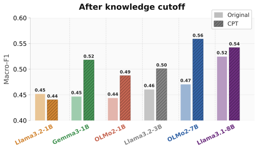
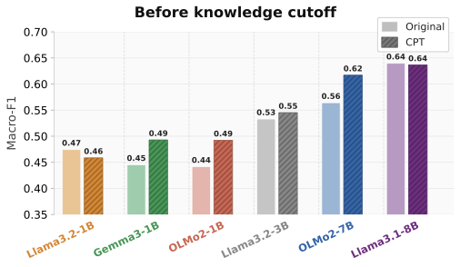
Figure 1. Macro-F1 on Daily Oracle questions split by each model's knowledge cutoff. Left: after-cutoff gains track the original token budget — OLMo2-7B and Gemma-3-1B absorb substantially more new knowledge than the more heavily pretrained Llama variants. Right: five of six models also improve on before-cutoff questions, reflecting Common Crawl's re-crawl overlap with the original pretraining distribution rather than catastrophic forgetting.
After-cutoff acquisition is heterogeneous. OLMo2-7B and Gemma-3-1B improve by +0.09 and +0.07 Macro-F1 respectively, while Llama-3.2-1B slightly regresses. This tracks the original pretraining-token budget (with Llama-3.1-8B as an exception): Gemma-3-1B at ~2T tokens, OLMo2 at ~4.2T, versus the more saturated Llama-3.2 family trained on up to 9T tokens. Plasticity tracks how far past compute-optimal a checkpoint was trained, not how much compute it consumed — a pattern consistent across three independent families.
CPT does not cause forgetting, and improves pre-cutoff recall. F1 on questions already encoded at the original cutoff consistently increases after CPT (only Llama-3.2-1B regresses, by 0.01). This is attributed to the CPT data itself: FineWeb-Edu retains cross-snapshot duplicates by design, so post-cutoff pages implicitly replay pre-cutoff content during training. Tested at the population level, after-cutoff Macro-F1 improves for 5 of 6 models (mean +0.043, paired t-test p=0.031), and before-cutoff Macro-F1 also improves for 5 of 6 (mean +0.027, p=0.034).
The advantage widens for more recent events and is preserved on questions whose source articles are not in the training corpus — evidence that gains reflect genuine knowledge acquisition rather than verbatim memorization.
| Model | Variant | LR | Data Score | MC Before | MC After | TF Before | TF After | All Avg |
|---|---|---|---|---|---|---|---|---|
| Gemma-3-1B | Base | — | — | 0.38 | 0.35 | 0.53 | 0.50 | 0.44 |
| Gemma-3-1B | CPT | 3×10⁻⁵ | 4.0 | 0.37 | 0.42 | 0.63 | 0.61 | 0.51 |
| Llama-3.1-8B | Base | — | — | 0.55 | 0.50 | 0.74 | 0.64 | 0.61 |
| Llama-3.1-8B | CPT | 1×10⁻⁶ | 4.0 | 0.55 | 0.50 | 0.74 | 0.67 | 0.61 |
| Llama-3.1-8B | CPT | 1×10⁻⁶ | 3.5 | 0.55 | 0.50 | 0.74 | 0.66 | 0.61 |
| Llama-3.2-1B | Base | — | — | 0.36 | 0.34 | 0.60 | 0.57 | 0.47 |
| Llama-3.2-1B | CPT | 1×10⁻⁶ | 4.0 | 0.36 | 0.34 | 0.57 | 0.54 | 0.45 |
| Llama-3.2-3B | Base | — | — | 0.47 | 0.45 | 0.60 | 0.54 | 0.51 |
| Llama-3.2-3B | CPT | 5×10⁻⁶ | 4.0 | 0.47 | 0.49 | 0.63 | 0.57 | 0.54 |
| OLMo2-1B | Base | — | — | 0.36 | 0.35 | 0.53 | 0.50 | 0.44 |
| OLMo2-1B | CPT | 1×10⁻⁶ | 4.0 | 0.39 | 0.43 | 0.60 | 0.56 | 0.50 |
| OLMo2-1B | CPT | 1×10⁻⁶ | 3.5 | 0.40 | 0.45 | 0.63 | 0.59 | 0.52 |
| OLMo2-7B | Base | — | — | 0.53 | 0.49 | 0.61 | 0.53 | 0.54 |
| OLMo2-7B | CPT | 1×10⁻⁶ | 4.0 | 0.55 | 0.56 | 0.69 | 0.65 | 0.61 |
Sample-Level View: Acquisition and Forgetting Are Coupled
Average Macro-F1 can hide simultaneous forgetting and learning. Classifying each base→CPT transition as acquisition (wrong→right) or forgetting (right→wrong) shows forgetting is real at the sample level — even the most plastic models flip 9–16% of before-cutoff True/False answers they originally had right — but is outweighed by acquisition in most configurations. Pooling 191 (acquisition, forgetting) pairs across models, learning rates, data slices and LoRA ranks, the two rates are strongly correlated (Pearson r=0.68, p=1.3e−27), with slope 0.60: roughly 0.6 previously-correct answers are lost per additional answer gained, and no configuration escapes the trade-off entirely.
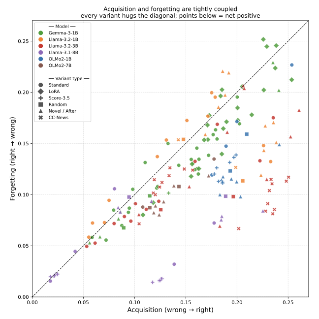
Every trained checkpoint (spanning models, learning rates, data slices and LoRA ranks) hugs the diagonal; points below it are net-positive.
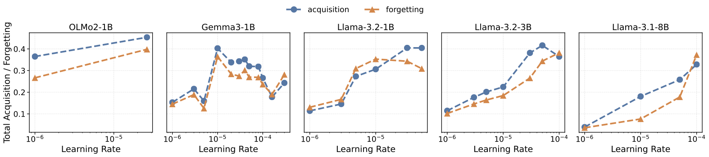
Total acquisition and forgetting rise together with the learning rate; the useful net is maximized at intermediate rates.
| Model | Format | Before-cutoff | After-cutoff | ||||
|---|---|---|---|---|---|---|---|
| Acq (%) | Forg (%) | Net (%) | Acq (%) | Forg (%) | Net (%) | ||
| OLMo2-7B | TF | 26.0 | 9.3 | +16.7 | 25.3 | 13.1 | +12.2 |
| OLMo2-7B | MC | 7.8 | 5.7 | +2.0 | 11.8 | 6.0 | +5.8 |
| Gemma-3-1B | TF | 20.7 | 13.1 | +7.7 | 20.6 | 15.6 | +5.1 |
| Gemma-3-1B | MC | 2.9 | 4.0 | −1.0 | 6.2 | 1.5 | +4.7 |
| OLMo2-1B | TF | 20.0 | 12.3 | +7.7 | 21.5 | 16.7 | +4.8 |
| OLMo2-1B | MC | 15.1 | 11.7 | +3.4 | 11.3 | 8.2 | +3.2 |
| Llama-3.2-3B | TF | 13.3 | 10.4 | +3.0 | 18.1 | 13.2 | +4.9 |
| Llama-3.2-3B | MC | 8.2 | 10.8 | −2.6 | 8.8 | 2.4 | +6.4 |
| Llama-3.1-8B | TF | 8.2 | 8.5 | −0.3 | 16.0 | 14.2 | +1.9 |
| Llama-3.1-8B | MC | 4.8 | 3.7 | +1.1 | 5.2 | 2.1 | +3.1 |
| Llama-3.2-1B | TF | 7.7 | 10.2 | −2.5 | 10.7 | 11.8 | −1.1 |
| Llama-3.2-1B | MC | 1.7 | 1.6 | +0.2 | 2.3 | 1.1 | +1.2 |
What Does CPT Cost? General Abilities Are Largely Preserved
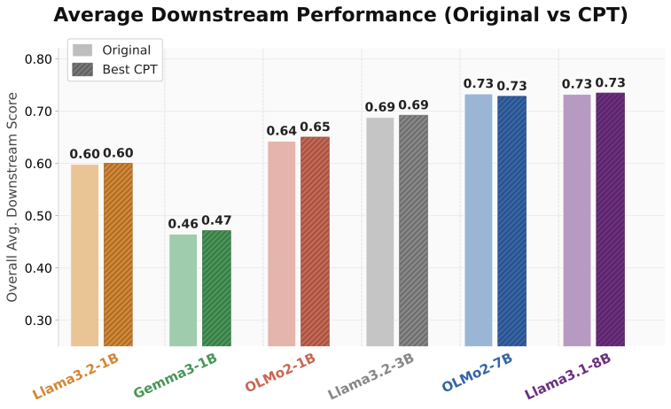
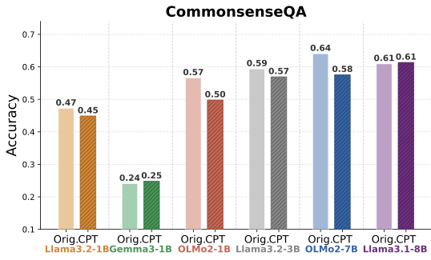
Figure 2. General capabilities are preserved under CPT. Left: macro-average accuracy across thirteen downstream tasks for each base model (light) and its best CPT variant (hatched); every model lands within 0.01 of its base. Right: CommonsenseQA, the single benchmark on which any model loses more than 0.02, with the largest drops concentrated on the OLMo2 family, which improves the most on Daily Oracle.
Macro-averaged accuracy across the thirteen downstream benchmarks stays within 0.01 of the base for every model, and 11 of 13 individual tasks stay within ±0.02 across all models tested. A two one-sided test against a ±0.01 margin gives a 90% CI of [−0.001, +0.007] — inside the margin on both sides, so general capabilities are statistically equivalent to base, not merely indistinguishable from it.
ARC-Challenge improves consistently across all six models and is the only benchmark with a uniform upward shift. CommonsenseQA, shown above, is the only benchmark on which any model loses more than two points, and the degradation concentrates on the OLMo2 family — precisely the family that gains the most on Daily Oracle. The worst-case loss is 0.06 on a single task out of thirteen, set against substantial Daily Oracle gains and a parallel ARC-Challenge improvement.
| Model | Config | LR | Score | PIQA | HSwag | WinoG | OBQA | BoolQ | SciQ | ARC-E | ARC-C | COPA | CSQA | SIQA | Arith | MMLU | Avg |
|---|---|---|---|---|---|---|---|---|---|---|---|---|---|---|---|---|---|
| Llama-3.1-8B | Base | — | — | 0.81 | 0.79 | 0.74 | 0.45 | 0.83 | 0.96 | 0.82 | 0.53 | 0.88 | 0.61 | 0.53 | 0.97 | 0.60 | 0.73 |
| Llama-3.1-8B | CPT | 1e-6 | 3.5 | 0.81 | 0.79 | 0.74 | 0.46 | 0.82 | 0.96 | 0.83 | 0.55 | 0.87 | 0.61 | 0.53 | 0.98 | 0.60 | 0.73 |
| Llama-3.1-8B | CPT (cont) | 1e-6 | cont | 0.81 | 0.79 | 0.74 | 0.45 | 0.82 | 0.96 | 0.83 | 0.55 | 0.87 | 0.61 | 0.53 | 0.98 | 0.60 | 0.73 |
| Llama-3.2-1B | Base | — | — | 0.74 | 0.64 | 0.61 | 0.38 | 0.65 | 0.92 | 0.65 | 0.37 | 0.78 | 0.47 | 0.46 | 0.77 | 0.33 | 0.60 |
| Llama-3.2-1B | CPT | 1e-6 | 4.0 | 0.74 | 0.64 | 0.60 | 0.38 | 0.65 | 0.92 | 0.65 | 0.36 | 0.77 | 0.47 | 0.46 | 0.78 | 0.33 | 0.60 |
| Llama-3.2-1B | CPT | 3e-6 | 4.0 | 0.75 | 0.64 | 0.60 | 0.39 | 0.65 | 0.92 | 0.66 | 0.35 | 0.77 | 0.47 | 0.46 | 0.76 | 0.33 | 0.60 |
| Llama-3.2-1B | CPT | 5e-6 | 4.0 | 0.74 | 0.64 | 0.61 | 0.39 | 0.65 | 0.93 | 0.66 | 0.35 | 0.78 | 0.46 | 0.46 | 0.77 | 0.34 | 0.60 |
| Llama-3.2-1B | CPT | 1e-5 | 4.0 | 0.75 | 0.63 | 0.61 | 0.38 | 0.65 | 0.93 | 0.69 | 0.37 | 0.78 | 0.45 | 0.45 | 0.77 | 0.34 | 0.60 |
| Llama-3.2-3B | Base | — | — | 0.77 | 0.74 | 0.69 | 0.41 | 0.74 | 0.95 | 0.75 | 0.43 | 0.85 | 0.59 | 0.52 | 0.97 | 0.52 | 0.69 |
| Llama-3.2-3B | CPT | 1e-6 | 4.0 | 0.77 | 0.73 | 0.69 | 0.42 | 0.74 | 0.95 | 0.75 | 0.45 | 0.85 | 0.60 | 0.52 | 0.97 | 0.52 | 0.69 |
| Llama-3.2-3B | CPT | 3e-6 | 4.0 | 0.78 | 0.73 | 0.70 | 0.42 | 0.75 | 0.95 | 0.76 | 0.46 | 0.86 | 0.59 | 0.52 | 0.97 | 0.52 | 0.69 |
| Llama-3.2-3B | CPT | 5e-6 | 4.0 | 0.78 | 0.73 | 0.69 | 0.41 | 0.75 | 0.95 | 0.77 | 0.46 | 0.85 | 0.58 | 0.52 | 0.96 | 0.52 | 0.69 |
| Llama-3.2-3B | CPT | 1e-5 | 4.0 | 0.77 | 0.73 | 0.69 | 0.43 | 0.75 | 0.95 | 0.77 | 0.46 | 0.86 | 0.57 | 0.51 | 0.96 | 0.52 | 0.69 |
| Gemma-3-1B | Base | — | — | 0.70 | 0.54 | 0.59 | 0.39 | 0.38 | 0.43 | 0.46 | 0.33 | 0.76 | 0.24 | 0.40 | 0.55 | 0.26 | 0.46 |
| Gemma-3-1B | CPT | 1e-6 | 4.0 | 0.70 | 0.54 | 0.58 | 0.40 | 0.38 | 0.44 | 0.46 | 0.34 | 0.78 | 0.24 | 0.40 | 0.55 | 0.26 | 0.47 |
| Gemma-3-1B | CPT | 3e-6 | 4.0 | 0.70 | 0.54 | 0.58 | 0.39 | 0.38 | 0.44 | 0.45 | 0.34 | 0.76 | 0.24 | 0.40 | 0.55 | 0.26 | 0.46 |
| Gemma-3-1B | CPT | 5e-6 | 4.0 | 0.70 | 0.54 | 0.58 | 0.39 | 0.38 | 0.43 | 0.46 | 0.33 | 0.77 | 0.24 | 0.40 | 0.55 | 0.26 | 0.46 |
| Gemma-3-1B | CPT | 1e-5 | 4.0 | 0.70 | 0.54 | 0.57 | 0.39 | 0.38 | 0.43 | 0.46 | 0.34 | 0.77 | 0.24 | 0.40 | 0.56 | 0.26 | 0.46 |
| Gemma-3-1B | CPT | 2e-5 | 4.0 | 0.70 | 0.54 | 0.59 | 0.39 | 0.38 | 0.44 | 0.47 | 0.34 | 0.78 | 0.24 | 0.40 | 0.54 | 0.26 | 0.47 |
| Gemma-3-1B | CPT | 3e-5 | 4.0 | 0.70 | 0.54 | 0.58 | 0.40 | 0.38 | 0.47 | 0.47 | 0.34 | 0.79 | 0.24 | 0.40 | 0.53 | 0.26 | 0.47 |
| Gemma-3-1B | CPT | 4e-5 | 4.0 | 0.70 | 0.54 | 0.56 | 0.40 | 0.38 | 0.49 | 0.48 | 0.34 | 0.81 | 0.25 | 0.40 | 0.51 | 0.26 | 0.47 |
| Gemma-3-1B | CPT | 5e-5 | 4.0 | 0.70 | 0.54 | 0.56 | 0.41 | 0.38 | 0.55 | 0.49 | 0.35 | 0.78 | 0.25 | 0.40 | 0.50 | 0.26 | 0.47 |
| Gemma-3-1B | CPT | 8e-5 | 4.0 | 0.70 | 0.54 | 0.60 | 0.41 | 0.38 | 0.63 | 0.54 | 0.35 | 0.76 | 0.25 | 0.40 | 0.51 | 0.26 | 0.49 |
| Gemma-3-1B | CPT | 1e-4 | 4.0 | 0.70 | 0.53 | 0.57 | 0.43 | 0.38 | 0.68 | 0.55 | 0.34 | 0.76 | 0.25 | 0.41 | 0.50 | 0.25 | 0.49 |
| Gemma-3-1B | CPT | 3e-4 | 4.0 | 0.68 | 0.49 | 0.58 | 0.42 | 0.62 | 0.86 | 0.64 | 0.33 | 0.74 | 0.27 | 0.40 | 0.47 | 0.26 | 0.52 |
| Gemma-3-1B | CPT (7ep) | 3e-5 | 4.0 | 0.70 | 0.54 | 0.57 | 0.40 | 0.38 | 0.46 | 0.46 | 0.35 | 0.78 | 0.25 | 0.41 | 0.50 | 0.26 | 0.47 |
| Gemma-3-1B | CPT | 3e-5 | 3.5 | 0.70 | 0.54 | 0.58 | 0.41 | 0.38 | 0.49 | 0.48 | 0.34 | 0.79 | 0.25 | 0.40 | 0.52 | 0.26 | 0.47 |
| Gemma-3-1B | LoRA r32 α32 | 1e-4 | 4.0 | 0.69 | 0.54 | 0.57 | 0.39 | 0.38 | 0.42 | 0.48 | 0.34 | 0.79 | 0.24 | 0.40 | 0.51 | 0.26 | 0.46 |
| Gemma-3-1B | LoRA r32 α32 | 3e-4 | 4.0 | 0.69 | 0.54 | 0.57 | 0.40 | 0.38 | 0.49 | 0.48 | 0.33 | 0.74 | 0.25 | 0.41 | 0.47 | 0.26 | 0.46 |
| Gemma-3-1B | LoRA r32 α64 | 1e-4 | 4.0 | 0.69 | 0.54 | 0.57 | 0.39 | 0.38 | 0.44 | 0.47 | 0.32 | 0.73 | 0.24 | 0.40 | 0.51 | 0.26 | 0.46 |
| Gemma-3-1B | LoRA r32 α64 | 3e-4 | 4.0 | 0.70 | 0.54 | 0.58 | 0.41 | 0.38 | 0.55 | 0.47 | 0.34 | 0.78 | 0.25 | 0.40 | 0.48 | 0.26 | 0.47 |
| Gemma-3-1B | LoRA r128 α128 | 1e-4 | 4.0 | 0.70 | 0.54 | 0.58 | 0.40 | 0.38 | 0.45 | 0.47 | 0.33 | 0.80 | 0.24 | 0.40 | 0.50 | 0.26 | 0.47 |
| Gemma-3-1B | LoRA r128 α128 | 3e-4 | 4.0 | 0.70 | 0.54 | 0.58 | 0.41 | 0.38 | 0.62 | 0.49 | 0.34 | 0.81 | 0.25 | 0.40 | 0.51 | 0.26 | 0.48 |
| Gemma-3-1B | LoRA r128 α128 | 6e-4 | 4.0 | 0.70 | 0.54 | 0.59 | 0.41 | 0.38 | 0.65 | 0.55 | 0.35 | 0.79 | 0.25 | 0.40 | 0.42 | 0.26 | 0.48 |
| Gemma-3-1B | LoRA r128 α256 | 1e-4 | 4.0 | 0.70 | 0.54 | 0.58 | 0.41 | 0.38 | 0.53 | 0.48 | 0.33 | 0.78 | 0.25 | 0.40 | 0.50 | 0.26 | 0.47 |
| Gemma-3-1B | LoRA r128 α256 | 3e-4 | 4.0 | 0.70 | 0.54 | 0.58 | 0.41 | 0.38 | 0.63 | 0.52 | 0.34 | 0.78 | 0.25 | 0.41 | 0.44 | 0.26 | 0.48 |
| Gemma-3-1B | LoRA r256 α256 | 1e-4 | 4.0 | 0.70 | 0.54 | 0.58 | 0.40 | 0.38 | 0.53 | 0.49 | 0.34 | 0.80 | 0.25 | 0.40 | 0.50 | 0.26 | 0.47 |
| Gemma-3-1B | LoRA r256 α256 | 3e-4 | 4.0 | 0.69 | 0.54 | 0.57 | 0.42 | 0.38 | 0.65 | 0.52 | 0.34 | 0.81 | 0.25 | 0.40 | 0.48 | 0.26 | 0.49 |
| Gemma-3-1B | LoRA r256 α256 | 6e-4 | 4.0 | 0.69 | 0.53 | 0.58 | 0.43 | 0.38 | 0.70 | 0.54 | 0.38 | 0.80 | 0.25 | 0.40 | 0.51 | 0.26 | 0.50 |
| OLMo2-1B | Base | — | — | 0.76 | 0.69 | 0.64 | 0.39 | 0.62 | 0.96 | 0.73 | 0.41 | 0.81 | 0.57 | 0.50 | 0.85 | 0.43 | 0.64 |
| OLMo2-1B | CPT | 1e-6 | 4.0 | 0.76 | 0.68 | 0.64 | 0.39 | 0.72 | 0.94 | 0.75 | 0.45 | 0.80 | 0.50 | 0.49 | 0.85 | 0.43 | 0.65 |
| OLMo2-1B | CPT | 2.63e-5 | 4.0 | 0.74 | 0.66 | 0.61 | 0.41 | 0.70 | 0.94 | 0.77 | 0.44 | 0.81 | 0.47 | 0.48 | 0.79 | 0.40 | 0.63 |
| OLMo2-1B | CPT | 1e-6 | 3.5 | 0.76 | 0.67 | 0.64 | 0.41 | 0.71 | 0.94 | 0.75 | 0.45 | 0.80 | 0.48 | 0.48 | 0.82 | 0.43 | 0.64 |
| OLMo2-7B | Base | — | — | 0.81 | 0.80 | 0.74 | 0.46 | 0.79 | 0.97 | 0.82 | 0.54 | 0.90 | 0.64 | 0.56 | 0.92 | 0.58 | 0.73 |
| OLMo2-7B | CPT | 1e-6 | 4.0 | 0.81 | 0.79 | 0.75 | 0.48 | 0.84 | 0.96 | 0.83 | 0.54 | 0.90 | 0.58 | 0.54 | 0.88 | 0.57 | 0.73 |
What Is the Learning Recipe?
Having established that CPT acquires knowledge without catastrophic forgetting and largely preserves general capabilities, we isolate three configuration choices: data quality vs. quantity, learning rate, and parameter-efficient adaptation via LoRA.
Data quality dominates quantity
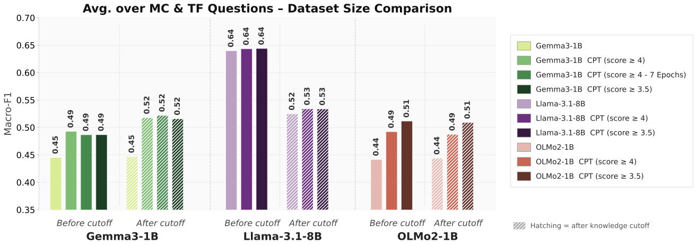
A curated 6B-token high-quality slice (score ≥ 4) achieves most of the available CPT signal. Expanding to a sevenfold larger but lower-quality 40B-token slice (score ≥ 3.5) yields only marginal additional gains; training 7 epochs on the high-quality slice provides negligible improvement over a single pass.
For Llama-3.1-8B and Gemma-3-1B, the two slices are nearly indistinguishable. Only OLMo2-1B benefits from the larger slice, improving from 0.49 to 0.51 — a modest gain relative to what the high-quality slice already contributed. Training Gemma-3-1B on the score≥4 slice for ~7 epochs (matching the 40B-token budget) yields identical scores to a single pass, confirming that additional passes over high-quality data provide no benefit once the signal is exhausted.
Knowledge acquisition and general capability need different learning rates
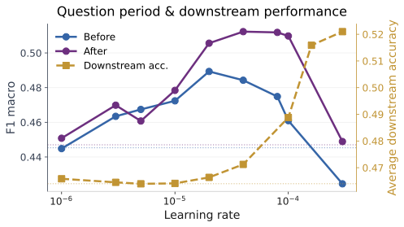
Daily Oracle Macro-F1 (Gemma-3-1B, sweep across 9 learning rates) peaks near 3×10⁻⁵ and collapses at higher rates, while downstream accuracy keeps improving at rates that already degrade factual recall. Dashed lines mark base model performance.
The practical implication: the optimal learning rate is a function of the deployment objective. Practitioners targeting factual currency should use a moderate rate around 3×10⁻⁵; those targeting general capability gains can tolerate higher rates, at the cost of factual precision. We recommend tuning against a held-out slice of the target evaluation surface rather than inheriting the learning rate from the original pretraining recipe.
LoRA at sufficient rank matches full CPT
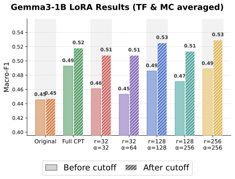
LoRA rank/scaling sweep for Gemma-3-1B: the smallest configurations trail full CPT slightly, while higher-rank variants match or slightly exceed it — with reduced GPU memory footprint, though no measurable wall-clock speedup (LoRA still requires full forward/backward passes through the frozen model).
This conclusion is not specific to Gemma-3-1B: repeating the experiment on Llama-3.2-3B, LoRA at ranks 128 and 256 reaches after-cutoff Macro-F1 of 0.525 and 0.534 against 0.540 for full CPT (base: 0.484), with all four LoRA configurations landing within 0.530–0.537 before cutoff.
An Operational Recipe for Time-Incremental Updates
- Source data from a curated, high-quality post-cutoff slice (FineWeb-Edu score ≥ 4 or equivalent) — large lower-quality crawls offer poor return on compute.
- Train at a moderate learning rate (~3×10⁻⁵) when factual recall is the primary objective, tuning against a held-out temporal slice.
- Use LoRA at rank ≥ 128 if memory-bound — it matches full CPT on knowledge acquisition.
- Plan for short runs: performance plateaus within the first third of training.
- Apply CPT before SFT in the post-training pipeline.
Does the Recipe Survive Deployment?
Deployed LLMs undergo post-training (SFT, then preference optimization) on top of a base checkpoint. We apply an identical Tulu 3 SFT + DPO pipeline to base and CPT checkpoints of OLMo2-7B and Llama-3.1-8B, holding the post-training data fixed so that any difference is attributable to CPT alone.
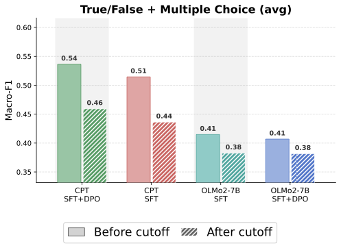
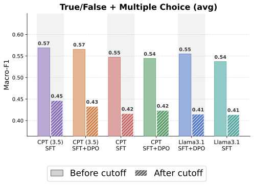
Figure 4. Macro-F1 on Daily Oracle across post-training configurations for OLMo2-7B (left) and Llama-3.1-8B (right). CPT variants consistently outperform their non-CPT counterparts after SFT and DPO.
CPT knowledge is not washed out by subsequent instruction tuning: on both before- and after-cutoff questions, all CPT variants outperform their non-CPT baselines. The gain is more pronounced for checkpoints trained on the larger score≥3.5 slice, suggesting more CPT signal injected before SFT translates into more retained signal after.
DPO's interaction with CPT is family-dependent. For both base models, DPO has little effect when applied without CPT. On top of CPT, however, it helps OLMo2-7B but slightly hurts Llama-3.1-8B — reminiscent of the alignment-tax phenomenon, where RLHF/DPO erodes SFT capabilities. With only two base models, we cannot yet attribute this to a robust family effect.
| Model | Configuration | CPT? | LR | Score | MC Before | MC After | TF Before | TF After | All Avg |
|---|---|---|---|---|---|---|---|---|---|
| Llama-3.1-8B | Instruct | No | — | — | 0.43 | 0.37 | 0.65 | 0.55 | 0.50 |
| Llama-3.1-8B | Tulu-3 | No | — | — | 0.52 | 0.38 | 0.63 | 0.55 | 0.52 |
| Llama-3.1-8B | Tulu-3 SFT+DPO (ours) | No | — | — | 0.51 | 0.40 | 0.60 | 0.51 | 0.51 |
| Llama-3.1-8B | Tulu-3 SFT (ours) | No | — | — | 0.49 | 0.37 | 0.59 | 0.52 | 0.49 |
| Llama-3.1-8B | CPT+SFT+DPO | Yes | 1e-6 | 4.0 | 0.51 | 0.40 | 0.58 | 0.44 | 0.48 |
| Llama-3.1-8B | CPT+SFT | Yes | 1e-6 | 4.0 | 0.51 | 0.41 | 0.59 | 0.43 | 0.48 |
| Llama-3.1-8B | CPT+SFT+DPO | Yes | 1e-5 | 4.0 | 0.53 | 0.47 | 0.57 | 0.47 | 0.51 |
| Llama-3.1-8B | CPT+SFT | Yes | 1e-5 | 4.0 | 0.53 | 0.47 | 0.59 | 0.47 | 0.52 |
| Llama-3.1-8B | CPT+SFT+DPO | Yes | 1e-6 | 3.5 | 0.51 | 0.38 | 0.62 | 0.49 | 0.50 |
| Llama-3.1-8B | CPT+SFT | Yes | 1e-6 | 3.5 | 0.52 | 0.38 | 0.62 | 0.51 | 0.51 |
| OLMo2-7B | Tulu-3 | No | — | — | 0.44 | 0.44 | 0.39 | 0.37 | 0.41 |
| OLMo2-7B | Tulu-3 SFT+DPO (ours) | No | — | — | 0.43 | 0.43 | 0.38 | 0.37 | 0.40 |
| OLMo2-7B | Tulu-3 SFT (ours) | No | — | — | 0.45 | 0.43 | 0.39 | 0.37 | 0.41 |
| OLMo2-7B | CPT+SFT+DPO | Yes | 1e-6 | 4.0 | 0.48 | 0.46 | 0.60 | 0.54 | 0.52 |
| OLMo2-7B | CPT+SFT | Yes | 1e-6 | 4.0 | 0.47 | 0.45 | 0.56 | 0.51 | 0.50 |
Additional Analyses
The CPT advantage widens over time
Plotting Daily Oracle results by the timestamp of the source news article (rather than a single before/after split) reveals a clear temporal trend: the Macro-F1 gap between CPT and base models grows steadily as questions approach the present, most pronounced for the plastic families (OLMo2, Gemma-3-1B).
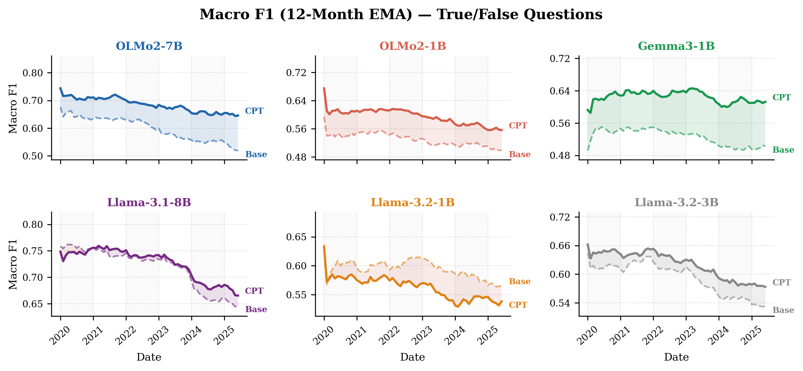
True/False split, 12-month EMA.
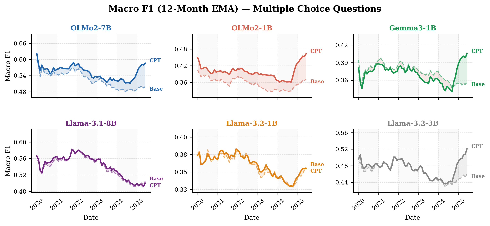
Multiple Choice split, 12-month EMA.
Gains are not driven by memorization
Daily Oracle has minimal overlap with our FineWeb-Edu slices (≈1% of questions come from articles in the score≥4 training set). To probe memorization directly, we built an additional question set from articles known to be in the training corpus. If gains reflected simple recall, we would expect substantially larger improvements on this in-corpus set — instead, Macro-F1 deltas are comparable across both sets.
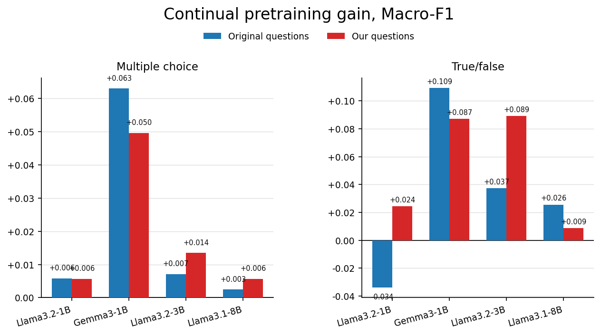
CPT improvements on questions grounded in the pretraining corpus track improvements on Daily Oracle closely, evidence against verbatim memorization.
Training dynamics: CPT converges early
Both knowledge acquisition and downstream accuracy plateau within the first third of training for OLMo2-1B and Llama-3.1-8B, suggesting short, periodically-repeated CPT runs are computationally sufficient.
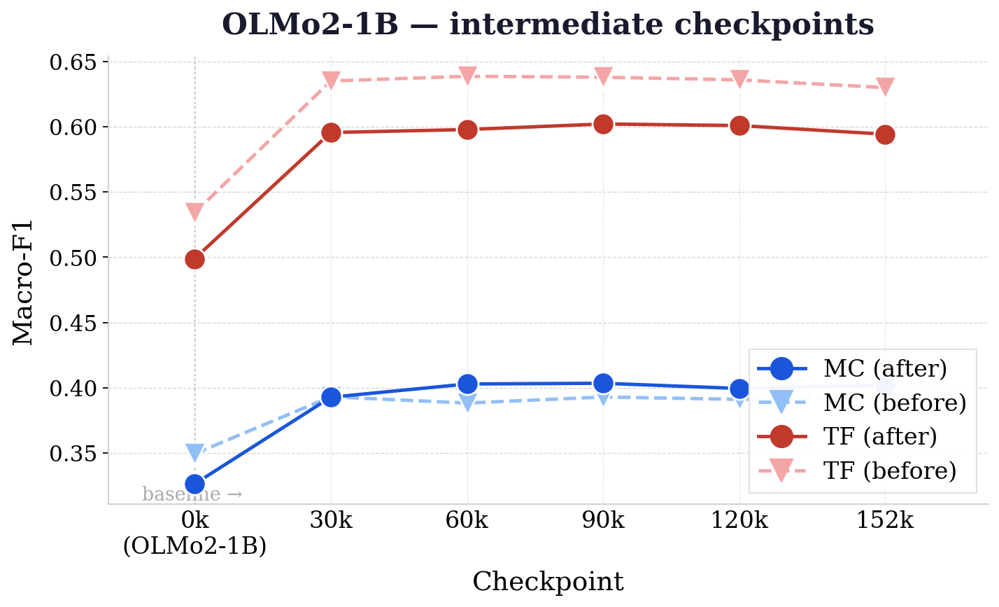
OLMo2-1B — Daily Oracle Macro-F1 across checkpoints.
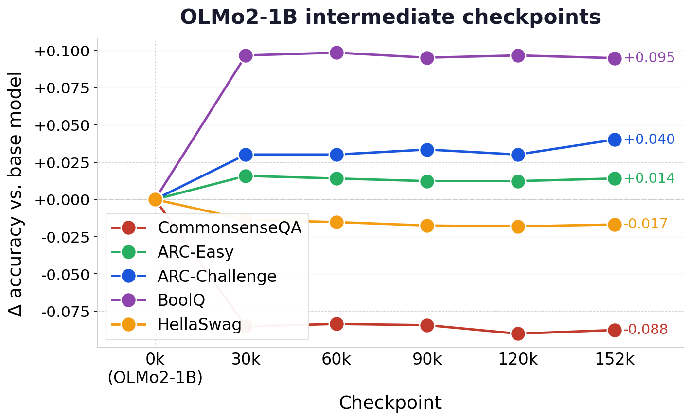
OLMo2-1B — downstream accuracy across checkpoints.
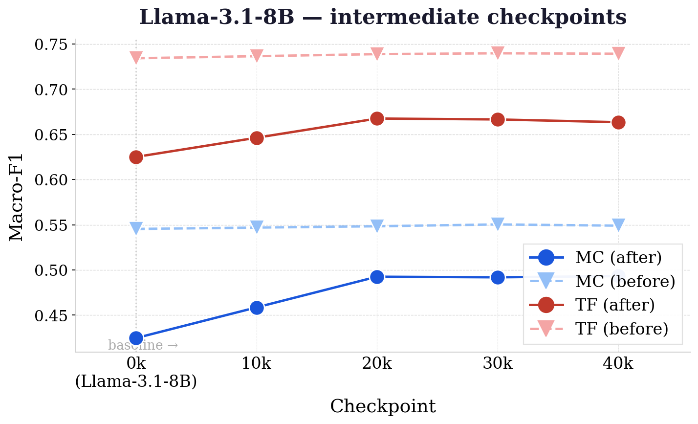
Llama-3.1-8B — Daily Oracle Macro-F1 across checkpoints.
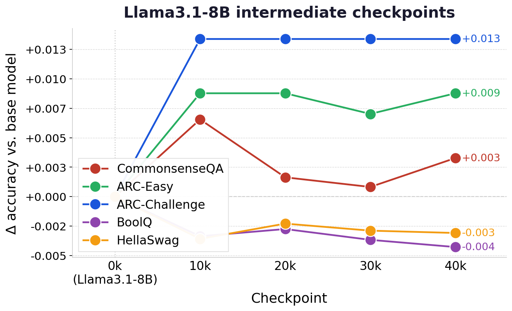
Llama-3.1-8B — downstream accuracy across checkpoints.
Limitations
- Language. Our pretraining corpus is English-only (FineWeb-Edu); whether the same recipe transfers to multilingual CPT is open.
- Single temporal benchmark. Our primary temporal evaluation is Daily Oracle; a multi-benchmark replication would strengthen the conclusions.
- Learning-rate sweep depth. Conducted in depth on Gemma-3-1B only; the divergence of QA and downstream optima may take a different shape on other families.
- Single CPT cycle. Whether iterative time-incremental updates compound gains or saturate over multiple rounds remains unresolved.
- Scale. Experiments are limited to models up to 7–8B parameters; whether the same trends hold at frontier scale is an open question.
AI use statement
Ethics statement
Reproducibility statement
BibTeX
@article{oncel2027timeincremental,
title = {Time-Incremental Continued Pretraining of LLMs: Knowledge Updates Without Catastrophic Forgetting},
author = {\"{O}ncel, Firat and Ali, Salman Hussain and Ravanelli, Mirco and Subakan, Cem and Yildiz, Cagatay},
year = {2027},
note = {Preprint}
}